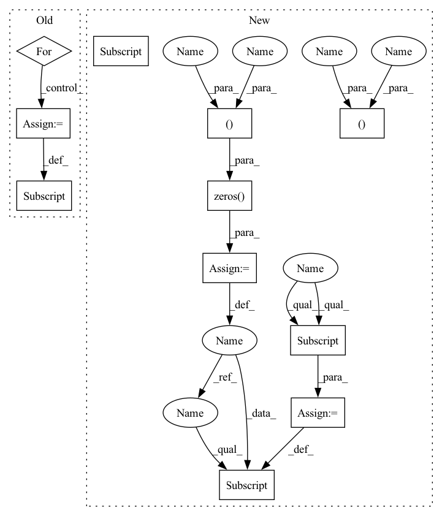

Pattern ID :14945

Before Change
px = np.clip(px, 0, width - 1)
py = np.clip(py, 0, height - 1)
heightmap[py, px] = points[:, 2] - bounds[2, 0]
for c in range(colors.shape[-1]):
colormap[py, px, c] = colors[:, c]
segmmap[py, px] = ids[:]
return heightmap, colormap, segmmap
After Change
heightmap = np.zeros((height, width), dtype=np.float32)
colormap = np.zeros((height, width, colors.shape[-1]), dtype=np.uint8)
segmmap = np.zeros((height, width), dtype=np.int32)
positionmap = np.zeros((height, width, 3), dtype=np.float32)
posemap = np.zeros((height, width, 3), dtype=np.float32)
// Filter out 3D points that are outside of the predefined bounds.
ix = (points[..., 0] >= bounds[0, 0]) & (points[..., 0] < bounds[0, 1])
iy = (points[..., 1] >= bounds[1, 0]) & (points[..., 1] < bounds[1, 1])
iz = (points[..., 2] >= bounds[2, 0]) & (points[..., 2] < bounds[2, 1])
valid = ix & iy & iz
points = points[valid]
colors = colors[valid]
ids = ids[valid]
positions = positions[valid]
poses = poses[valid]
// Sort 3D points by z-value, which works with array assignment to simulate
// z-buffering for rendering the heightmap image.
iz = np.argsort(points[:, -1])
points, colors, ids, positions, poses = (
points[iz],
colors[iz],
ids[iz],
positions[iz],
poses[iz],
)
px = np.int32(np.floor((points[:, 0] - bounds[0, 0]) / pixel_size))
py = np.int32(np.floor((points[:, 1] - bounds[1, 0]) / pixel_size))
px = np.clip(px, 0, width - 1)
py = np.clip(py, 0, height - 1)
heightmap[py, px] = points[:, 2] - bounds[2, 0]
colormap[py, px] = colors[:]
segmmap[py, px] = ids[:]
positionmap[py, px] = positions[:]
posemap[py, px] = poses[:]
return heightmap, colormap, segmmap, positionmap, posemap
In pattern: SUPERPATTERN
Frequency: 3
Non-data size: 11
Instances
Fragment ID: 49808394
Project Name: wkentaro/reorientbot
Commit Name: 56af9845d0c8c6e658161267f7677966f24e646c
Time: 2021-07-02
Author: www.kentaro.wada@gmail.com
File Name: examples/target_pick/_get_heightmap.py
M Class Name: AnonimousClass
N Class Name: AnonimousClass
M Method Name: get_heightmap(7)
N Method Name: get_heightmap(5)
M Parent Class:
N Parent Class:
M File Name: examples/target_pick/_get_heightmap.py
N File Name: examples/target_pick/_get_heightmap.py
M Start Line: 23
M End Line: 47
N Start Line: 4
N End Line: 58
'>
Before Change
px = np.clip(px, 0, width - 1)
py = np.clip(py, 0, height - 1)
heightmap[py, px] = points[:, 2] - bounds[2, 0]
for c in range(colors.shape[-1]):
colormap[py, px, c] = colors[:, c]
segmmap[py, px] = ids[:]
return heightmap, colormap, segmmap
After Change
bounds = np.asarray(aabb).T
width = int(np.round((bounds[0, 1] - bounds[0, 0]) / pixel_size))
height = int(np.round((bounds[1, 1] - bounds[1, 0]) / pixel_size))
heightmap = np.zeros((height, width), dtype=np.float32)
colormap = np.zeros((height, width, colors.shape[-1]), dtype=np.uint8)
segmmap = np.zeros((height, width), dtype=np.int32)
positionmap = np.zeros((height, width, 3), dtype=np.float32)
posemap = np.zeros((height, width, 3), dtype=np.float32)
// Filter out 3D points that are outside of the predefined bounds.
ix = (points[..., 0] >= bounds[0, 0]) & (points[..., 0] < bounds[0, 1])
iy = (points[..., 1] >= bounds[1, 0]) & (points[..., 1] < bounds[1, 1])
iz = (points[..., 2] >= bounds[2, 0]) & (points[..., 2] < bounds[2, 1])
valid = ix & iy & iz
points = points[valid]
colors = colors[valid]
ids = ids[valid]
positions = positions[valid]
poses = poses[valid]
// Sort 3D points by z-value, which works with array assignment to simulate
// z-buffering for rendering the heightmap image.
iz = np.argsort(points[:, -1])
points, colors, ids, positions, poses = (
points[iz],
colors[iz],
ids[iz],
positions[iz],
poses[iz],
)
px = np.int32(np.floor((points[:, 0] - bounds[0, 0]) / pixel_size))
py = np.int32(np.floor((points[:, 1] - bounds[1, 0]) / pixel_size))
px = np.clip(px, 0, width - 1)
py = np.clip(py, 0, height - 1)
heightmap[py, px] = points[:, 2] - bounds[2, 0]
colormap[py, px] = colors[:]
segmmap[py, px] = ids[:]
positionmap[py, px] = positions[:]
posemap[py, px] = poses[:]
return heightmap, colormap, segmmap, positionmap, posemap
'>
Fragment ID: 49808395
Project Name: wkentaro/reorientbot
Commit Name: 56af9845d0c8c6e658161267f7677966f24e646c
Time: 2021-07-02
Author: www.kentaro.wada@gmail.com
File Name: examples/target_pick/_get_heightmap.py
M Class Name: AnonimousClass
N Class Name: AnonimousClass
M Method Name: get_heightmap(7)
N Method Name: get_heightmap(5)
M Parent Class:
N Parent Class:
M File Name: examples/target_pick/_get_heightmap.py
N File Name: examples/target_pick/_get_heightmap.py
M Start Line: 23
M End Line: 47
N Start Line: 4
N End Line: 58
'>
Before Change
count = np.arange(x.shape[0]) + 1
self.c_t = torch.zeros_like(self.emb) // shape=(seq_len, batch_size, day_dim)
for i, att_timesteps in enumerate(count):
// 按时间步迭代，计算每个时间步的经attention的gru输出
self.c_t[i] = self.attentionStep(first_h_a, first_h_b, att_timesteps)
if self.drop < 1.0:
self.c_t = self.dropout(self.c_t)
After Change
return out
def forward(self, x):
batch_size, time_steps, _ = x.size()
x = self.proj(x)
x = self.dropout(x)
out = torch.zeros((batch_size, time_steps, self.hidden_dim))
for cur_time in range(time_steps):
cur_x = x[:, : cur_time + 1, :]
out[:, cur_time, :] = self.retain_encoder(cur_x)
return out
'>
Fragment ID: 49808400
Project Name: yhzhu99/covid-ehr-benchmarks
Commit Name: b3d4ba85ad8e8cfeb3e45e07e5fadfa3fd4a25fa
Time: 2022-06-25
Author: yhzhu99@gmail.com
File Name: app/models/backbones/retain.py
M Class Name: RETAIN
N Class Name: RETAIN
M Method Name: forward(2)
N Method Name: forward(2)
M Parent Class: nn.Module
N Parent Class: nn.Module
M File Name: app/models/backbones/retain.py
N File Name: app/models/backbones/retain.py
M Start Line: 64
M End Line: 83
N Start Line: 44
N End Line: 53